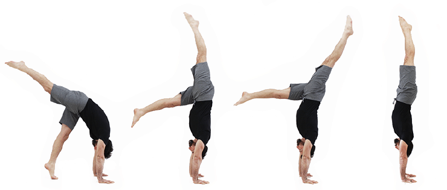

trang chủ
giới thiệu
bài tập cho người mới bắt đầu
danh sách các bài tập
skills
ảnh câu lạc bộ
L-sit

1: Chuẩn bị
-
Dụng cụ: Bạn có thể tập L-sit trên một thanh xà kép (parallel bars), thanh đơn hoặc trên mặt đất nếu bạn
đủ mạnh.
-
Vị trí cơ thể: Đặt hai tay lên thanh hoặc sàn, lòng bàn tay hướng xuống, hai chân duỗi thẳng về phía
trước,
cơ thể tạo thành chữ "L".
2: Thực hiện L-sit
-
Bước 1: nhấc chân khỏi mặt đất (hoặc giữ chân trên thanh nếu tập trên xà kép) sao cho cả người tạo thành
một góc 90 độ.
-
Bước 2: Duy trì tư thế này với cơ bụng căng cứng và chân duỗi thẳng. Hãy chắc chắn rằng lưng dưới của
bạn không bị cong.
-
Bước 3: Giũ tư thế trong khoảng 10-20 giây nếu mới bắt đầu. Khi mạnh hơn, bạn có thể giữ lâu hơn.
3: Lưu ý
-
Cơ chính: Bài tập L-sit tập trung vào cơ bụng, cơ vai và cơ đùi trước.
-
Thở: Đừng quên thở đều và giữ cơ thể cân bằng trong suốt quá trình tập.
-
Khởi động: Nên khởi động kỹ trước khi tập để tránh chấn thương.
Hanstand

1: khởi động
-
Làm nóng cơ thể bằng các động tác kéo giãn vai, cổ tay, cổ chân và các cơ ở bụng.
-
Thực hiện các bài tập tăng cường cơ core (bụng, lưng) và vai như plank hoặc trống đẩy.
2: Tập tư thế chuẩn bị
-
Đứng cách khoảng 1 gang tay.
-
Đặt hai tay lên mặt đất, khoảng cách tay rộng bằng vai.
-
Hông hướng lên cao, giống như tư thế chó cúi mặt trong yoga.
3: Đá chân lên tường
-
Đá một chân lên trước và chân kia theo sau. khi chưa quen, bạn có thể dựa vào tường để giữ thăng bằng.
-
Đầu luôn nhìn vào giữa hai bàn tay, lưng giữ thẳng.
4: Giữ thăng bằng với tường
-
Sau khi bạn đá chân lên, giữ tư thế này trong khoảng 15-30 giây.
-
Tập trung vào siết cơ bụng, giữ thăng bằng lưng và chân.
-
Dần dần bạn có thể giảm bớt sự dựa vào tường, hãy cố gắng tập không dựa vào tường.
5: Luyện tập tự do
-
Sau khi bạn đã thành thạo việc giữ handstand dựa tường, hãy cố gắng tập không dựa vào tường.
-
Thực hiện trong không gian rộng, để có thể ngã một cách an toàn.
-
Khi mới tập, có thể nhờ người khác hỗ trợ hoặc luyện tập trên thảm mền.
6: Khiên trì luyện tập
-
Hanstand đòi hỏi thời gian và khiên nhẫn. Bắt đầu với các buổi tập ngắn và dần tăng thời gian giữ thăng
bằng.
-
Luyện tập cơ bụng và vai cực kỳ quan trọng để giúp bạn kiểm soát tốt hơn.
Quay về đầu trang